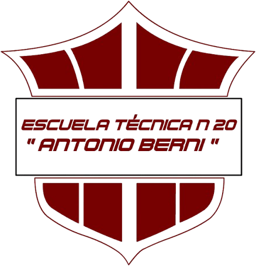

Arduino y automatización
Prototipos de iluminación automática, sistemas de acceso, juegos interactivos y mecanismos que combinan circuitos con programación.

Ideas que nacen de necesidades concretas y se transforman en experiencias de aprendizaje.
Prototipos de iluminación automática, sistemas de acceso, juegos interactivos y mecanismos que combinan circuitos con programación.
Un proyecto colaborativo que integra las producciones web de 4.º año y el trabajo de integración de 7.º, con HTML, CSS, JavaScript y documentación.
Montaje, análisis y simulación de redes, junto con experiencias de comunicación entre equipos y resolución de problemas.
Conocé los prototipos en imágenes y videos grabados durante las experiencias de trabajo. Los estudiantes integran programación, circuitos, diseño, pruebas y mejora de sus propuestas.
Maqueta de un dispositivo asociado al depósito o separación de residuos, realizada con materiales reutilizados.
Placa, conexiones y componentes electrónicos durante las pruebas de funcionamiento.
Prototipo lúdico en el que se experimenta con movimientos y mecanismos.
Circuitos y estructura física de un dispositivo automatizado.
Prueba del prototipo, su placa controladora y conexiones.
Construcción a escala que permite observar el uso de luces y circuitos.
Maqueta con sensores, luces y mecanismos para controlar un acceso.
Maqueta de un juego de básquet con componentes electrónicos y mecánicos.
Cada propuesta ofrece oportunidades para identificar un problema, investigar, planificar, probar, documentar y presentar resultados.
Conocer las prácticas